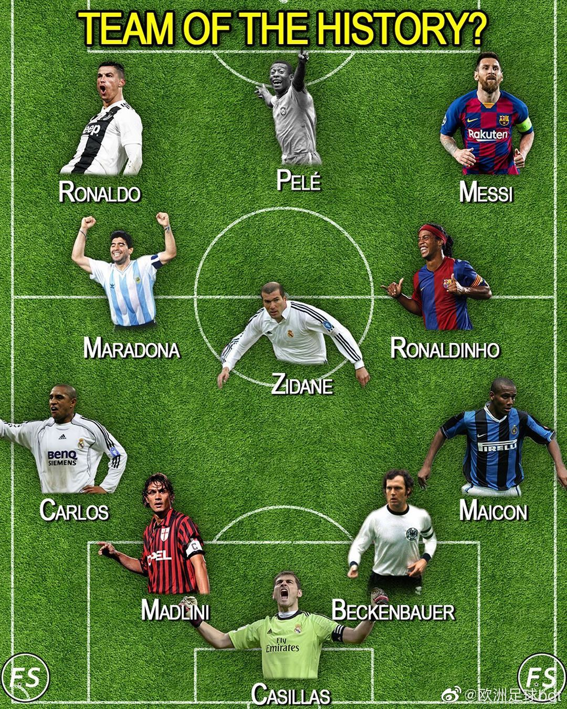
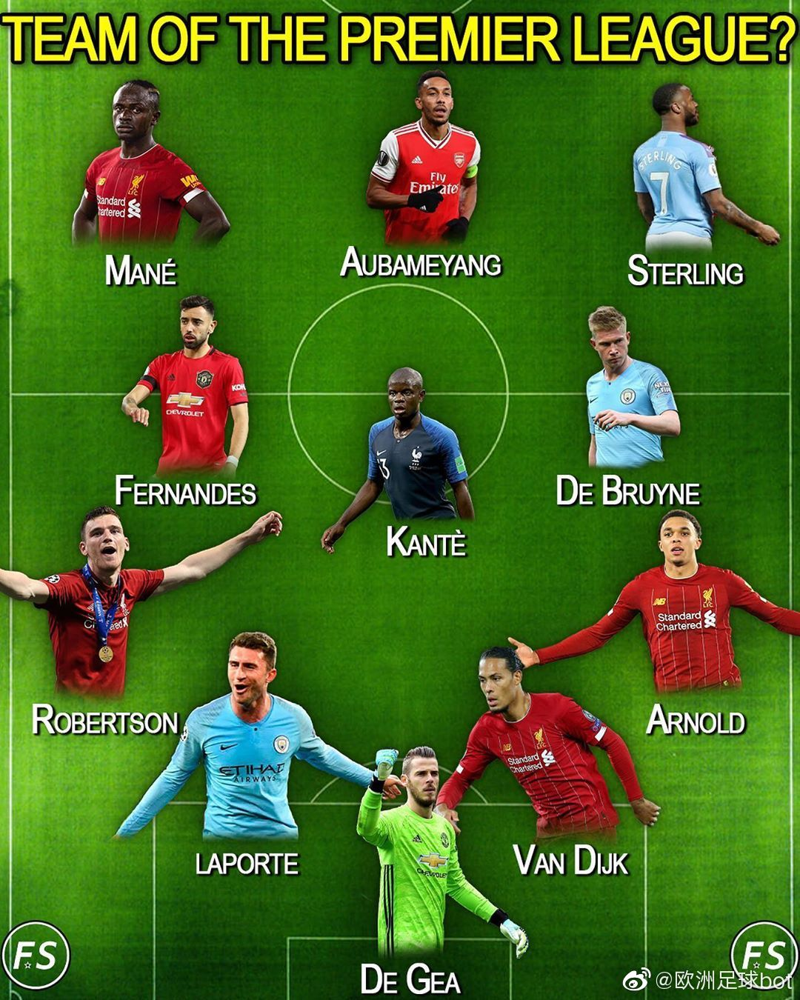
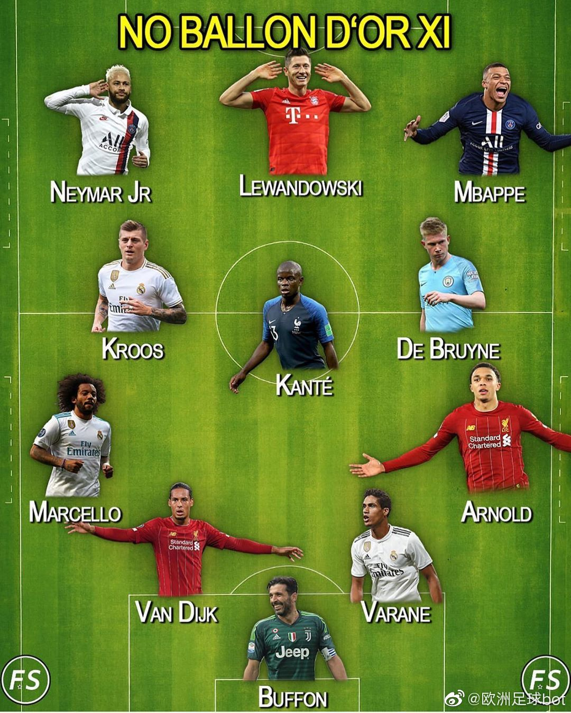

#话说# 埃及这块地方似乎对世界古代文明史在每个阶段都扮演着重要地位——法老时代的古埃及自然不用说，亚历山大之后的希腊化时代埃及也是希腊和罗马文明的一个中心，后来又成为了基督教的一个中心，之后是伊斯兰文明的一个中心（中间还有埃及人自豪的挡住了蒙古人的桥段）。

斯图亚特9
2020-06-06
斯图亚特9
2020-06-06
没拿过欧冠的最佳阵容。尤文图斯一举贡献六个。耽误了多少球星这是……
@TustMachine:
足坛各种最强阵容：
1、最佳新星11人阵容；
2、历史最佳阵容；
3、现役最佳11人阵容；
4、光头最佳11人阵容；
5、穆里尼奥执教最佳11人阵容；
6、现役英超最佳11人阵容；
7、无金球奖最佳11人阵容；
8、无欧冠最佳11人阵容；
9、瓜迪奥拉执教最佳11人阵容；
10、皇马＆巴萨联队最佳11人阵容；
11、金发球员最佳11人阵容；
12、多特＆拜仁联队最佳11人阵容。
#体育迷失恋33天# #吐槽个球#
1、最佳新星11人阵容；
2、历史最佳阵容；
3、现役最佳11人阵容；
4、光头最佳11人阵容；
5、穆里尼奥执教最佳11人阵容；
6、现役英超最佳11人阵容；
7、无金球奖最佳11人阵容；
8、无欧冠最佳11人阵容；
9、瓜迪奥拉执教最佳11人阵容；
10、皇马＆巴萨联队最佳11人阵容；
11、金发球员最佳11人阵容；
12、多特＆拜仁联队最佳11人阵容。
#体育迷失恋33天# #吐槽个球#
- 
- 
- 
斯图亚特9
2020-06-06
偶然和一个在美国互联网大公司和中国互联网大公司都干过的朋友聊了几句。他说风格很不一样。比如中国互联网公司会说，做一个BigTable出来，4，5个月就做完并上生产环境。然后呢？还真做出来了。
斯图亚特9
2020-06-06
还真是！ //@polyhedron:轉發和評論完全兩個風向，而且轉發是讚的2倍。
@北京日报:
【地摊经济不适合北京】“地摊经济”近日成为热词，一张所谓的北京“地摊地图”也在网上流传，但经记者向市城管委核实，此为谣言。帖子中的109处摆摊地点，实际上是多年前本市无序设摊较为集中的点位。经过近年来的综合整治，这些摊点已基本得到整治。
不同城市有不同的发展脉络、发展阶段、发展要求和具体情况，“地摊经济”是否适合一个城市，要由这个城市的定位做出判断和选择。在这个问题上，一定要坚持从自身实际出发，不能盲目跟风。北京是国家首都，北京形象代表首都形象、国家形象。作为全国首个减量发展的超大型城市，有着自身的功能定位和管理要求。以首善标准抓好城市精细化治理，意味着北京必须注重保持城市应有的秩序，不应也不能发展那些不符合首都城市战略定位、不利于营造和谐宜居环境的经济业态。特别是包含老城区在内的北京中心城区本身环境脆弱、商业集中、人员稠密，治理难度本就很大，游商地摊给城市管理、环境卫生、交通出行等方面带来的压力显而易见。街道脏乱、假冒伪劣、噪音扰民、游商满街、堵塞交通、不卫生不文明等曾经的城市顽疾一旦卷土重来，之前的治理成果都可能付诸东流，不利于树立良好的首都形象和国家形象，不利于促进经济高质量发展。
城，所以盛民也。城市发展归根到底是“以人民为中心”。近些年，北京立足建设国际一流的和谐宜居之都的战略目标，拿出“绣花”功夫治理城市，坚定有序推进疏解整治促提升专项行动，狠抓城市精细化管理，提升生活服务的品质，得到广大市民的充分肯定。通过巨大努力，“开墙打洞”、占道经营、无证无照经营、背街小巷环境等问题逐步得到整治，生活服务网点布局更加便民，城市品质和人居环境明显提升。胡同街巷净了静了，街心绿地公园多了、“四九城的味道，又回来了”……看得见、摸得着、能受益的成果，稳步增强着全社会对精细化治理的共识和信心，也让政府与市民间的互动更加积极有效。而多年来的治理实践告诉我们，城市精细化治理是一个久久为功的过程，稍一放松就可能前功尽弃。只有继续立足城市功能定位，始终坚持红线约束，始终强化规矩意识，方能不断夯实市民群众的获得感、幸福感和安全感。
突如其来的新冠肺炎疫情，确实给北京经济发展和市民生产生活造成了一定影响。随着经济社会秩序全面恢复，全市上下“把失去的时间夺回来”的意愿十分强烈，但越是这个时候，越需要锚定城市功能定位和管理要求，有所为有所不为，切实巩固好来之不易的城市治理成果。目前，按照中央部署要求，北京在持续抓好常态化防控的前提下，正在紧抓窗口期，不断拿出积极措施，做好“六稳”工作，落实“六保”任务，其中的很多已经产生积极效果。不论是出台落实复工复产、复商复市、援企稳岗、灵活就业、扶贫济困等一系列政策，还是千方百计帮扶中小微企业，组织开展北京消费季活动，发展特色商圈、夜间经济、休闲经济，有的放矢的政策红包，都勾勒出北京经济新的“活力图”。特别是着眼困难群众的现实需求和实际困难，不断强化兜底保障，确保稳定生活。可以说，保就业保民生，北京有自己的一系列招和法，关键是进一步抓细抓紧抓实，让好政策尽快落地见效，把疫情带来的损失降到最低。
某种意义上，关于“地摊经济”的讨论，也帮我们再次认识和把握了北京的城市定位和发展目标。统筹好疫情防控、民生保障、城市治理等多方面工作，以真金白银助力企业重振旗鼓，以多样政策促进消费回暖增加就业，我们必将化危为机，积蓄起更强大的发展能量。（北京日报客户端评论员 京平） 地摊经济不适合北京
地摊经济不适合北京
不同城市有不同的发展脉络、发展阶段、发展要求和具体情况，“地摊经济”是否适合一个城市，要由这个城市的定位做出判断和选择。在这个问题上，一定要坚持从自身实际出发，不能盲目跟风。北京是国家首都，北京形象代表首都形象、国家形象。作为全国首个减量发展的超大型城市，有着自身的功能定位和管理要求。以首善标准抓好城市精细化治理，意味着北京必须注重保持城市应有的秩序，不应也不能发展那些不符合首都城市战略定位、不利于营造和谐宜居环境的经济业态。特别是包含老城区在内的北京中心城区本身环境脆弱、商业集中、人员稠密，治理难度本就很大，游商地摊给城市管理、环境卫生、交通出行等方面带来的压力显而易见。街道脏乱、假冒伪劣、噪音扰民、游商满街、堵塞交通、不卫生不文明等曾经的城市顽疾一旦卷土重来，之前的治理成果都可能付诸东流，不利于树立良好的首都形象和国家形象，不利于促进经济高质量发展。
城，所以盛民也。城市发展归根到底是“以人民为中心”。近些年，北京立足建设国际一流的和谐宜居之都的战略目标，拿出“绣花”功夫治理城市，坚定有序推进疏解整治促提升专项行动，狠抓城市精细化管理，提升生活服务的品质，得到广大市民的充分肯定。通过巨大努力，“开墙打洞”、占道经营、无证无照经营、背街小巷环境等问题逐步得到整治，生活服务网点布局更加便民，城市品质和人居环境明显提升。胡同街巷净了静了，街心绿地公园多了、“四九城的味道，又回来了”……看得见、摸得着、能受益的成果，稳步增强着全社会对精细化治理的共识和信心，也让政府与市民间的互动更加积极有效。而多年来的治理实践告诉我们，城市精细化治理是一个久久为功的过程，稍一放松就可能前功尽弃。只有继续立足城市功能定位，始终坚持红线约束，始终强化规矩意识，方能不断夯实市民群众的获得感、幸福感和安全感。
突如其来的新冠肺炎疫情，确实给北京经济发展和市民生产生活造成了一定影响。随着经济社会秩序全面恢复，全市上下“把失去的时间夺回来”的意愿十分强烈，但越是这个时候，越需要锚定城市功能定位和管理要求，有所为有所不为，切实巩固好来之不易的城市治理成果。目前，按照中央部署要求，北京在持续抓好常态化防控的前提下，正在紧抓窗口期，不断拿出积极措施，做好“六稳”工作，落实“六保”任务，其中的很多已经产生积极效果。不论是出台落实复工复产、复商复市、援企稳岗、灵活就业、扶贫济困等一系列政策，还是千方百计帮扶中小微企业，组织开展北京消费季活动，发展特色商圈、夜间经济、休闲经济，有的放矢的政策红包，都勾勒出北京经济新的“活力图”。特别是着眼困难群众的现实需求和实际困难，不断强化兜底保障，确保稳定生活。可以说，保就业保民生，北京有自己的一系列招和法，关键是进一步抓细抓紧抓实，让好政策尽快落地见效，把疫情带来的损失降到最低。
某种意义上，关于“地摊经济”的讨论，也帮我们再次认识和把握了北京的城市定位和发展目标。统筹好疫情防控、民生保障、城市治理等多方面工作，以真金白银助力企业重振旗鼓，以多样政策促进消费回暖增加就业，我们必将化危为机，积蓄起更强大的发展能量。（北京日报客户端评论员 京平）